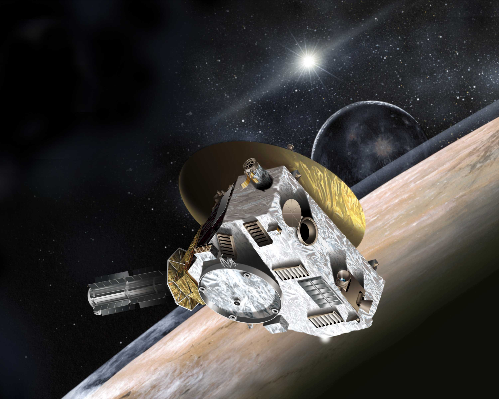

افق های نو (New Horizons)
نیوهورایزنز (به انگلیسی: New Horizons) که در محافل علمی ایران افقهای نو نیز نامیده میشود، فضاپیمای روباتیکِ ناسا و بخشی از برنامههای فضایی مرزهای نو است که در ۱۹ فوریه ۲۰۰۶ میلادی بهسوی کمربند کویپر حرکت کرد. این کاوشگر فضایی که آن را کاوشگر بینسیارهای یا «سیارهپیما» هم خواندهاند، نخستین فضاپیمایی است که بهسوی پلوتو پرواز کرد و به مطالعه درباره این سیاره کوتوله و پنج ماهِ تا کنون شناختهشده آن، بهویژه شارون، پرداخت. ماههای دیگرِ شناختهشده پلوتو: نیکس، و هیدرا و همچنین پی۴ و پی۵ هستند که اکنون به نامهای سربروس و استوکس نامگذاری شدهاند. آزمایشگاه فیزیک عملیِ دانشگاه جانز هاپکینز در این پروژه با مؤسسه تحقیقات جنوب غربی که پیمانکار اصلی این پروژه است از طریق تیم ویژهای به رهبری آلن استرن همکاری دارد. افقهای نو نتیجه سالها کار و تلاش بر روی پروژههای مختلفی است که از دهه ۱۹۹۰ فرستادن فضاپیمایی به سوی پلوتو در جریان بودهاست. افقهای نو ویژگیهای سیارهشناختیِ پلوتو و ماههای آن را بررسی و دادهبرداری کرده و یافتههای خود را تدریجاً و در خلال کارهای دیگر خود ظرف ماهها و سال آینده به زمین گزارش میکند. سفر طولانی این کاوشگر فضایی با رسیدن به پلوتو خاتمه نمییابد، بلکه طبق برنامهریزیهای ازپیشانجامگرفته، کاوشگر فضایی افقهای نو پس از گذر از کنار پلوتو به سراغ کمربند کویپر خواهد رفت تا دستکم با یکی از اجرام این کمربند نیز دیدار کند. این کاوشگر بالاخره در ۱۴ ژوئیه ۲۰۱۵ (۲۳ تیرماه ۱۳۹۴ خورشیدی) از کنار پلوتو گذشت و بهسوی کمربند کویپر رهسپار شد.
از زمین تا پلوتو
بهدنبال لغو دو پروژه دیگر برای بررسی نادانستهها درباره پلوتو، انجام این پروژه که پیشنهاد یک تیم به رهبری آلن استرن از مؤسسه تحقیقات جنوبغربی تگزاس بود در سال ۲۰۰۱ میلادی به تصویب رسید. پس از تأخیرهای پیدرپی، سرانجام موشک حامل این فضاپیما در دوازدهم ژانویه ۲۰۰۶ میلادی از پایگاه نیروی هوایی کیپ کاناورال مستقیماً به بیرون از حوزه کنشی زمین پرتاب شد. این نخستین بار بود که یک جرم ساخت بشر سرعت گریز از سیاره خود را که ۱۱،۲ کیلومتر در ثانیه است مستقیماً پشت سر میگذاشت. افقهای نو با سرعت ۱۶،۲۶ کیلومتر در ثانیه و برونرفت یکسره از هوا کره زمین این رکورد تازه را در نخستین ساعت آغاز به کار از خود بهجا گذاشت. پس از پرواز کناری کوتاهی با سیارک ۱۳۲۵۲۴ (به انگلیسی: 132524 APL)، که در سال ۲۰۰۲ میلادی کشف شدهبود، افقهای نو بهسوی سیاره مشتری رهسپار شد و در بیستوهشتم فوریه ۲۰۰۷ میلادی از فاصلهُ ۲،۳ میلیون کیلومتری مشتری گذشت. یکی از دستاوردهای این دیدار، دریافت کمک گرانشی (اضافه سرعت) به مقدار ۴کیلومتر در ثانیه (۱۴،۰۰۰ کیلومتر در ساعت) بود.